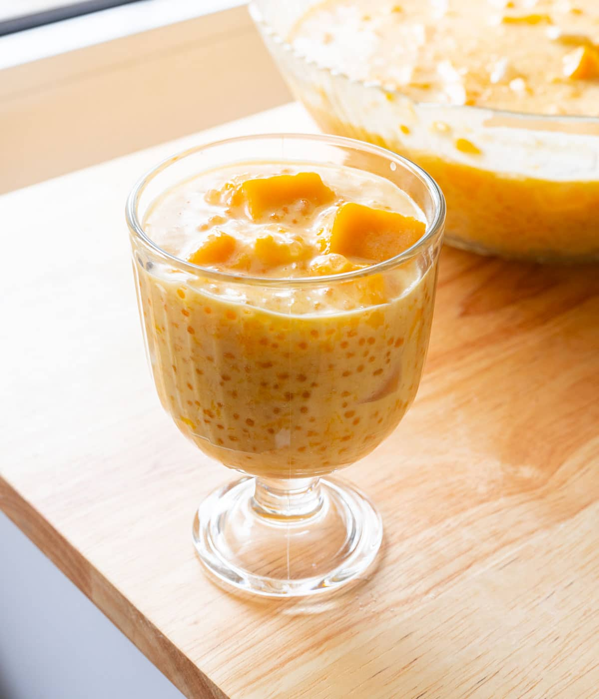

Mango Sago Recipe

What is a mango sago?
Mango sago is a popular refreshing dessert originating from Hong Kong.
In the Philippines (where my family is from), we call our version “mango bango”!
Ingredients
- Coconut Jelly
- Coconut Milk
- Condensed Milk
- Mango
- Small Tapioca Pearls
Steps to Make It
- In a medium-sized pot, boil tapioca pearls uncovered for 10 minutes, until pearls turn from white to mostly translucent.
Cover pot with lid and let tapioca sit for another 10 minutes, or until fully translucent.
Transfer to fine mesh strainer, draining excess liquid. Rinse well with cold water.
- Blend 1 pound of mangoes with sweetened condensed milk. Taste for sweetness,
adding more condensed milk to your liking.
- In your serving bowl, add cooked tapioca pearls, diced mangoes, and nata de coco.
- Stir in coconut milk, and it’s ready to serve! Add in large ice cubes if you want it super cold.